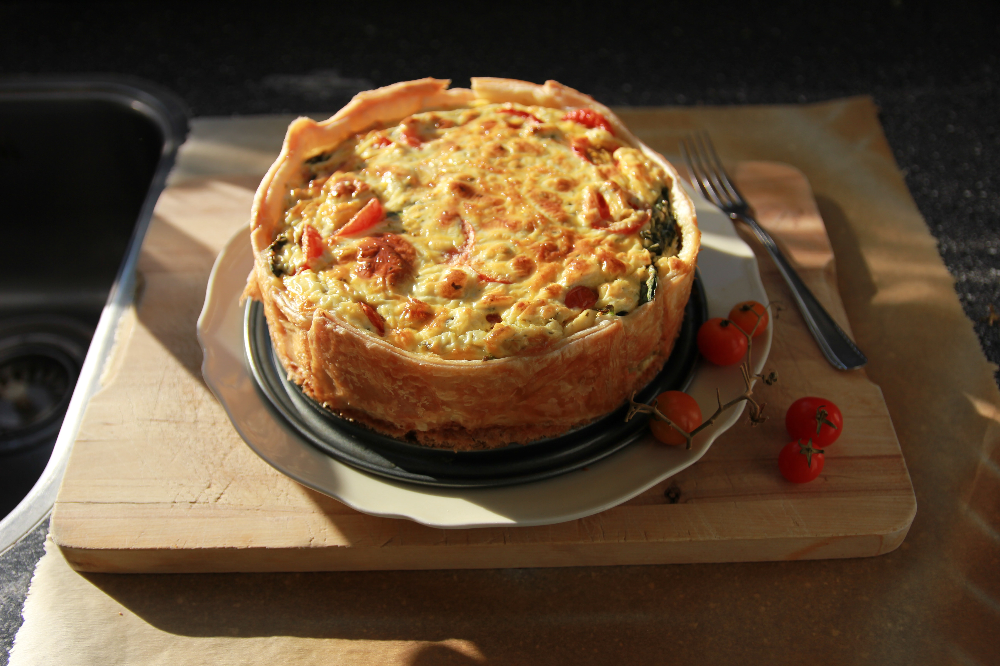

Crustless Spinach Quiche

This crustless quiche made with eggs, spinach, and Muenster cheese is perfect to serve at any meal. With no heavy crust to make, this light-tasting quiche is ready in under an hour. Make it your own by adding leftover ham and substituting Cheddar, feta, or goat cheese for the Muenster
I serve this quick and easy quiche in the summer for brunch with a side of sausage links and a fresh fruit bowl! Cheesy, savory quiche is the perfect addition to any brunch menu. It's easy to make, takes less than an hour, and it's a crowd favorite. When you're in need of a crustless quiche that will brighten up your breakfast or brunch, turn to this tried-and-true recipe.
Ingredients
- Eggs
- Spinach
- Onion
- Muenster Cheese
- Spices
Directions
- Preheat oven to 350 degrees F (175 degrees C). Lightly grease a 9-inch pie pan.
- Heat oil in a large skillet over medium-high heat. Add onions and cook, stirring occasionally, until soft, about 3 minutes. Stir in spinach and continue to cook until excess moisture has evaporated.
- Whisk together eggs, salt, and pepper in a large bowl. Add Muenster cheese and spinach mixture and stir until well blended.
- Pour into the prepared pan.
- Bake in the preheated oven until eggs have set, about 30 minutes.
- Remove from the oven and let cool for 10 minutes before serving.
- Serve hot and enjoy!